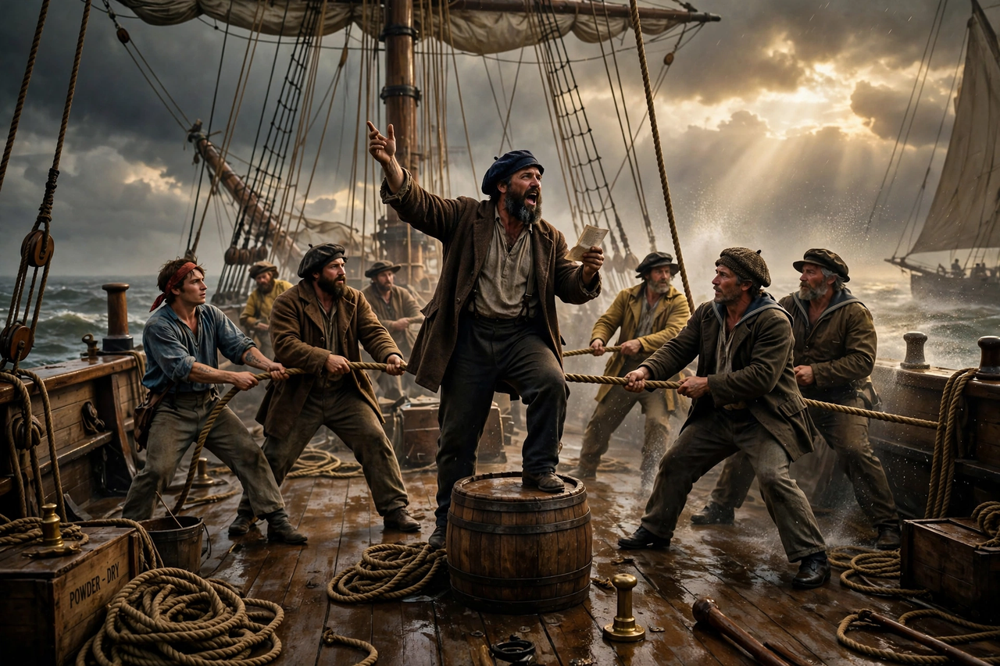

| Sea shanty | |
| Stylistic origins | Work songs, maritime folk music, British, Irish, African-American and Caribbean traditions |
|---|---|
| Cultural origins | Early 19th century, merchant sailing ships |
| Typical features | Call and response between a shantyman and crew; rhythm matched to a shipboard task |
| Other names | Chantey, chanty |

A sea shanty, chantey, or chanty is a genre of traditional folk song that was once commonly sung as a work song to accompany rhythmical labour aboard large merchant sailing vessels. The practice developed principally in the nineteenth century, in step with the growth of international trade, and declined with the coming of steamships.
Shanties were sung so that groups of sailors could coordinate physically demanding tasks requiring unified effort. The singing was led by a shantyman, who sang the verses, while the crew joined in the chorus, timing their pulls or pushes to accents in the music. Different shanty types matched different jobs:
Well-known shanties include "Drunken Sailor" ("What Shall We Do with a Drunken Sailor?"), "Blow the Man Down", "South Australia", and the New Zealand whaling song "Wellerman". The repertoire was heavily influenced by minstrel songs, popular songs, and African-American and Caribbean musical traditions. The English sailor Stan Hugill (1906–1992), often called the last working shantyman, documented the tradition in Shanties from the Seven Seas (1961).
Shanties survived in folk revival clubs and maritime festivals after the age of sail ended. In January 2021, recordings of shanties, notably Nathan Evans's version of "Wellerman", went viral on TikTok in a phenomenon dubbed "ShantyTok", bringing the genre a worldwide mainstream audience.